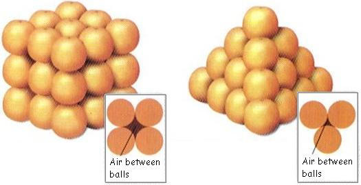

Research Data Management
Guiding Principles and Best Practices
University of Oxford
University of Oxford
Go to the people. Live with them. Learn from them. Love them.
Start with what they know. Build with what they have.
But with the best leaders, when the work is done, the task accomplished, the people will say “We have done it ourselves”.
Who, what, when, where, why, and how of data
Who
- who owns the data;
- who manages the data;
- who collects the data;
- who stores the data; and,
- who protects/safeguards the data.
What
- what the data is about;
- type, nature, and provenance;
- specifies the information available, such as numerical data, text, images, etc.
When
- timing;
- period; and/or,
- frequency
Where
-
location where the data is stored or accessed
- database;
- server;
- external sources
Why
- purpose behind collecting and analysing the data;
- guides appropriate actions based on the stated purpose
How
Methods used to:
- collect;
- process;
- extract
Group exercise
Given your current research question/s, identify the who, what, when, where, why, and how of the data that you will need.
Data lifecycle

Data systems
Data systems (analogy)

The 400-year old problem:
What is the best way to stack a collection of spherical objects, such as a display of oranges for sale?
Data systems (analogy)

Data systems
Data systems involve platforms that manage and store data effectively such as databases (relational or non-relational), data lakes holding large volumes, big data systems for massive datasets, and business intelligence tools for analytics.
Data system as an organising framework for
Most effective and efficient data structure for …
Most appropriate data types required/needed …
Formatted in a data format that is most compliant and compatible …
Data Privacy, Security, and Protection
Data privacy and protection
Data privacy is the protection of personal information, ensuring individuals have control over how their data is collected, stored, and used. It encompasses the principles and practices that govern how sensitive data, especially personal data, is handled, including collection, retention, deletion, and access.
Principles of data privacy and protection
The key principles of data protection ensure that personal data is handled responsibly and ethically. These principles are essential for protecting individuals’ privacy and rights while also enabling organisations to use data effectively.
The core principles are: lawfulness, fairness, and transparency; purpose limitation; data minimisation; accuracy; storage limitation; integrity and confidentiality; and accountability.
Lawfulness, Fairness, and Transparency
There should be a legal basis for collecting and using personal data (lawfulness)
Handling personal data in ways that people would reasonably expect, and not using it in ways that cause them unjustified harm (fairness)
Requires that any information and communication relating to the processing of personal data be easily accessible and easy to understand, and that clear and plain language be used (transparency)
Purpose limitation
Personal data should only be collected for specified, explicit, and legitimate purposes and not further processed in a manner that is incompatible with those purposes.
specific purposes for which personal data are processed should be explicit and legitimate and determined at the time of the collection of the personal data.
Data minimisation
Processing of personal data must be adequate, relevant, and limited to what is necessary in relation to the purposes for which they are processed.
Personal data should be processed only if the purpose of the processing could not reasonably be fulfilled by other means.
This is linked to the principle of Storage limitation
Accuracy
Ensure that personal data are accurate and, where necessary, kept up to date; taking every reasonable step to ensure that personal data that are inaccurate, having regard to the purposes for which they are processed, are erased or rectified without delay.
Accurately record information collected or receive and the source of that information.
Storage limitation
Personal data should only be kept in a form which permits identification of data subjects for as long as is necessary for the purposes for which the personal data are processed.
In order to ensure that the personal data are not kept longer than necessary, time limits should be established by the controller for erasure or for a periodic review.
Integrity and confidentiality
- Protection against unauthorised or unlawful access to or use of personal data and the equipment used for the processing and against accidental loss, destruction or damage, using appropriate technical or organisational measures.
Accountability
Take responsibility for the processing of personal data and how they comply with the above principles
Demonstrate (through appropriate records and measures) compliance
Legal frameworks
General Data Protection Regulation - UK and EU
For Vietnam???
These frameworks follow the same principles described earlier
Data security
The practice of protecting digital information from unauthorised access, use, disclosure, disruption, modification, or destruction.
Encompasses various measures and techniques to ensure the confidentiality, integrity, and availability of data throughout its lifecycle.
Includes securing physical hardware, software, storage devices, and user devices, as well as implementing access controls, policies, and procedures.
Layers of data security - Personal/individual layer
- Each one of us as individuals are responsible for the security of our own personal information and any other information that we own or are responsible for.
Layers of data security - Institutional layer
institutions responsible for the security of the personal information of its own employees and/or members/affiliates
institutions responsible for the security of the personal information of others from whom they collect information from as part of the service they render.
institutions responsible for the security of other types of information that they own or are responsible for
Data tools
Given your research questions and your answers to the previous exercise, identify data tools that you think you will need.
Data tools
Our choice of tools or the tools that we are made to use dictate how we implement the different steps in the data management pathway
As such, our data tools also influence the resulting quality of data that we obtain
The dangers of spreadsheets
The danger is real. The European Spreadsheet Risks Interest Group keeps a public archive of spreadsheet “horror stories”.
Many researchers have examined error rates in spreadsheets. In 13 audits of real-world spreadsheets, an average of 88% contained errors.
Microsoft Excel specifically converts some combination of character and numbers to dates and stores dates differently between operating systems, which can cause problems in downstream analyses.
The dangers of spreadsheets
Spreadsheets are often used as a multi-purpose tool for data entry, storage, analysis, and visualisation.
Spreadsheets, by design, make humans format data to be viewed by the human eye rather than to be readable by a machine.
Spreadsheets are best suited to data entry and storage
Specific recommendations for organising spreadsheet data in a way that both humans and computer programs can read
Be consistent
Use consistent codes for categorical variables
Use a consistent fixed code for missing values
Use consistent variable names
Use consistent identifiers
Use consistent layout in multiple data files
Be consistent
Use consistent file names
Use consistent format for dates (ideally ISO format - YYYY-MM-DD)
Use consistent phrases
Be careful about extra spaces in cells
Choose good names for things
Do not use spaces in variables names and file names
Avoid special characters
Short but meaningful
Write dates as YYYY-MM-DD
recommend using the global “ISO 8601” standard, YYYY-MM-DD
Microsoft Excel’s treatment of dates can cause problems in data. It stores them internally as a number, with different conventions on Windows and Macs. So, you may need to manually check the integrity of your data when they come out of Excel.
No empty cell
Put just one thing in a cell
Make it a rectangle
Create a data dictionary
No calculations in the raw data file
Do not use font colour or highlighting as data
Make backups
Use data validation to avoid errors
We discuss validity errors specifically later in this slide deck.
Save the data in plain text files
Other formatting issues with Excel can be found here
We need to talk about data cleaning
Data cleansing or data cleaning is the process of identifying and correcting (or removing) corrupt, inaccurate, or irrelevant records from a dataset, table, or database. It involves detecting incomplete, incorrect, or inaccurate parts of the data and then replacing, modifying, or deleting the affected data.
But how do we know that our data has errors?
It depends on the data and it depends on what kind of error you are looking for
Most of the time, when we say we are performing data cleaning, we are looking for or spotting errors of validity
Validity in terms of data is the degree to which the values conform to defined rules or constraints. In general such errors can be spotted “by eye”
Validity errors
Data type errors - values in a particular column must be of a particular data type
Range errors - numbers or dates should fall within a certain range
Missing values errors - missing values particularly when a value is required
Unique value errors
Validity errors
Set membership errors - values should only be from a specific set of possible values
Expected value errors
Cross-field validation - the value in one field determines what is correct or incorrect value in another field (example: pregnant male)
Validity errors often due to data entry errors/issues
But not all errors can be detected “by eye”
Some validity errors and errors of accuracy, consistency, uniformity, and distribution requires exploratory data analysis to be detected.
We will discuss these errors next week omn our topic on exploratory data analysis.
We need to talk about data re-structuring
Data restructuring refers to manipulating existing data to make it more suitable for analysis, storage, or other purposes. It involves changing the format, structure, or organisation of data to align with specific needs, such as data warehousing or statistical analysis.
This is another type of data cleaning and is sometimes called “data tidying”
Data structure - Example 1
The table has two columns and three rows, and both rows and columns are labelled.
| treatmenta | treatmentb | |
|---|---|---|
| John Smith | 2 | |
| Jane Doe | 16 | 11 |
| Mary Johnson | 3 | 1 |
Data structure - Example 2
Rows and columns have been transposed. The data is the same, but the layout is different.
| John Smith | Jane Doe | Mary Johnson | |
|---|---|---|---|
| treatmenta | 16 | 3 | |
| treatmentb | 2 | 11 | 1 |
Data semantics
A dataset is a collection of values, usually either numbers (if quantitative) or strings (if qualitative).
-
Values are organised in two ways:
- Every value belongs to a variable and an observation.
- A variable contains all values that measure the same underlying attribute (like height, temperature, duration) across units.
- An observation contains all values measured on the same unit (like a person, or a day, or a race) across attributes.
Data structure - Example 3
| name | treatment | result |
|---|---|---|
| John Smith | a | |
| Jane Doe | a | 16 |
| Mary Johnson | a | 3 |
| John Smith | b | 2 |
| Jane Doe | b | 11 |
| Mary Johnson | b | 1 |
- The same data as earlier but with variables in columns and observations in rows.
Data structure - summary
For a given dataset, it’s usually easy to figure out what are observations and what are variables, but it is surprisingly difficult to precisely define variables and observations in general.
A general rule of thumb is that it is easier to describe functional relationships between variables than between observations (rows), and it is easier to make comparisons between groups of observations than between groups of columns.
The standard of tidy data
Provides a standard way to organise data values within a dataset.
Designed to facilitate initial exploration and analysis of the data, and to simplify the development of data analysis tools.
Principles of tidy data are closely tied to those of relational databases
Tidy data definition
Tidy data is a standard way of mapping the meaning of a dataset to its structure.
A dataset is messy or tidy depending on how rows, columns and tables are matched up with observations, variables and types.
Tidy data criteria
Each variable forms a column.
Each observation forms a row.
Each type of observational unit forms a table.
Five most common problems with messy datasets
Column headers are values not variable names
Multiple variables are stored in one column
Variables are stored in both rows and columns
Multiple types of observational units are stored in the same table.
A single observational unit is stored in multiple tables.
Tidy data is extremely compatible with relational databases and data collection tools that adhere to relational database standards
Messy data is commonly a result of the use of data tools that do not have standards or set rules for data structure i.e., Microsoft Excel
Project-based data workflow
Mindset
As our skills as data analysts grow, the surrounding systems and infrastructure become crucial for ensuring the reproducibility and long-term preservation of our work. However, we often lack formal training or mentorship in managing such systems, leading us to either get lost amidst this technology or that we begin to explore these possibilities ourselves.
Mindset
With this short course in general and this second week specifically, we hope to help you gracefully fall into this gap.
Don’t fret over past mistakes, but raise the bar for new work. Small but meaningful incremental changes add up over time, transforming your data quality of life.
Livestock not pets
Think of your data processes as livestock and not pets.
Project-oriented workflow
Organise work into projects.
File system discipline
- Put all the files related to a single project in a designated folder.
- This applies to data, code, figures, notes, etc.
- Depending on project complexity, you might enforce further organization into subfolders.
File naming
File organisation and naming are powerful weapons against chaos.
Three principles for file names

machine-readable
human-readable
plays well with default ordering
Machine-readable
avoid spaces, punctuation, accented, characters, case sensitivity.
-
deliberate use of delimiters/space-holders -
"_"or"-"- general rule is that
"_"to delimit units of metadata while"-"to delimit words so that they are more readable.
- general rule is that
Machine-readable
- easy to search for files later
- easy to narrow file lists based on names
- easy to extract information from file names
Human-readable
- name contains info on content.
- use the concept of a slug used in URLs.
Human-readable
Easy to figure out what something is based on its name
Plays well with default ordering
put something numeric first
use ISO 8601 standard for dates
add leading zeros to numbers
Three principles for file names
easy to implement now
payoffs accumulate as your skills evolve and projects get more complex

Tâm Anh Oxford Partnership